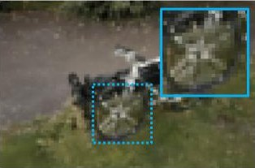
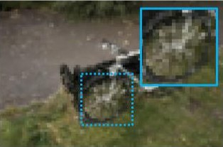
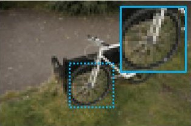
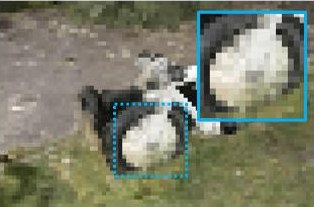

SCIE · Published
Adaptive-Scale Color Offset and Error-Guided Gaussian Reallocation for Multi-Scale 3D Gaussian Splatting
ACO-EGR gives every Gaussian a small per-scale color correction and moves under-used Gaussians to where coarse-scale error stays high — without adding primitives.
+2.09dB
PSNR gain at 128× over MS-GS (Mip-NeRF 360)
+1.96dB
PSNR gain at 4× (Mip-NeRF 360)
3
Benchmarks improved from 4× onward: Mip-NeRF 360, Tanks & Temples, Deep Blending
±0
Extra Gaussians — reallocation runs under a fixed primitive budget
Problem
At coarse scales one pixel averages many Gaussians, so a single fixed color per Gaussian is the wrong color once you zoom out.
Idea
(a) ACOAdaptive-scale Color OffsetLearns a per-scale DC color offset Δs for each Gaussian — geometry stays untouched.(b) EGRError-guided Gaussian ReallocationMoves low-contribution Gaussians into regions where coarse-scale error stays high.
Result
Higher PSNR and SSIM at every scale from 4× upward on all three datasets, with rendering time close to MS-GS.
PSNR at every zoom level
Higher is better · hover for values
MS-GSOurs (ACO-EGR)
Drag to compare — MS-GS vs. Ours
Same view rendered at a lower resolution; the boxed inset is a zoomed crop.


MS-GSOurs↔
Ground truth

GTVanilla 3DGS

3DGSCrops from Fig. 3 of Park et al., Mathematics 2026 (CC BY 4.0).